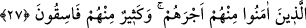

kitaplar vahyettik. Hiçbir peygamber ve hiçbir kitap yoktur ki, en sağlam sebepler ve en
büyük insan olarak bu iki peygambere delâlet etmesin.
“Onlardan (insanlardan) kimi doğru yoldadır” Bu iki kolun nesillerinden veya
gönderme ve gönderilenler anlamındaki irsal ve mürselin kelimelerinin gösterdiği
kendilerine peygamber gönderilenlerden bir kısmı hak yoldadır. “Yâni onlardan
bazılarına peygamberler geldi. “mühtedîn” yâni peygamber ve kitaba îmân ettiler ve
dinleri üzerinde sâbit-kadem oldular.”
“İçlerinden birçoğu da yoldan çıkmışlardır” Doğru yoldan çıkmış, dolayısıyle kesin
olarak sapıklığa düşmüşlerdir.
27. Sonra bunların izinden ardarda peygamberlerimizi gönderdik. Meryem oğlu
Îsâ’yı da arkalarından gönderdik, ona İncil’i verdik; ona uyanların kalplerine
şefkat ve merhamet vermiştik. Uydurdukları ruhbanlığa gelince, onu biz yazmadık.
Fakat kendileri Allah rızâsını kazanmak için yaptılar. Ama buna da gereği gibi
uymadılar. Biz de onlardan îmân edenlere mükâfâtlarını verdik. İçlerinden çoğu da
yoldan çıkmışlardır.
“Sonra bunların izinden ardarda peygamberlerimizi gönderdik.” Yâni onlardan
sonra, buradaki çoğul zamiri, Nûh, İbrâhim ve ikisinin gönderilmiş olduğu ümmetlerle
onlardan sonra gelenlere, yâni “Hz. Nûh’tan sonra Hz. Hûd ve Hz. Sâlih’e, Hz.
İbrâhim’den sonra ise Hz. İsmâil, Hz. İshâk, Hz. Ya‘kub ve Hz. Yûsuf’a (a.s)” gider.
Çünkü sonradan gelen peygamberler de zürriyettendirler. Zamîrin nesillere dönük
olmamak üzere, bu iki peygamber ve onlarla aynı zamanda bulunan peygamberleri kasd
etmiş olması da mümkündür.
Âsâr kelimesi, isr kelimesinin çoğuludur. “Onun izi üzerine çıktım” yâni “ardından
gittim” dersin. Bu takdirde âyetin mânâsı şöyle olur: Onlardan sonra her bir peygamberi
başka bir peygamberle takip edip gönderdik.
Harîrî Dürretü’l-gavvâs adlı eserinde şöyle demiştir: Arapçada iki elçi birden
gönderildiğinde ‘
’ denir, yâni onları ikiledim. Bir üçüncü gönderilince
bunu ifâde etmenin yönü, ‘
’ yani, ikisini üçüncü ile güçlendirdim, demektir.
Nitekim “İşte o zaman biz iki elçi göndermiştik. Onları yalanladılar. Bunun üzerine
üçüncü bir elçi gönderdik.” (Yasin, 36/14) buyrulması buna bir örnektir. Şâyet
peygamberler, büyük çoğunluk hâlinde birbirini takib ederse, bunun en güzel ifâdesi